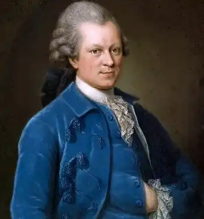
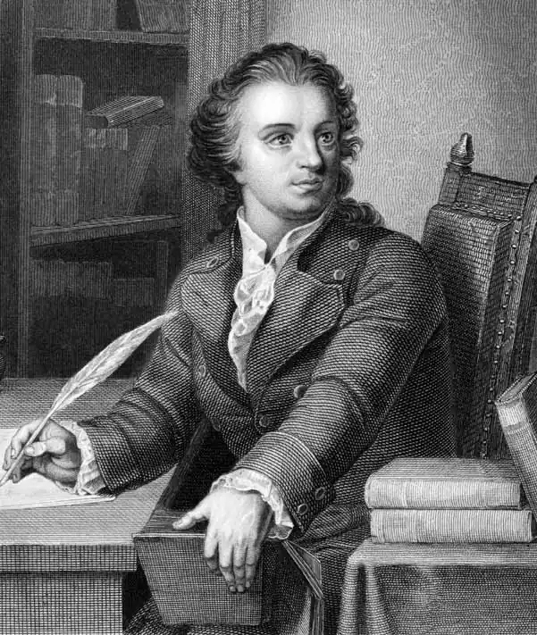

Лессінг Готгольд Ефраїм (Lessing, Gothold Ephraim — 22.01.1729, Каменц, Саксонія — 15.02.1781, Брауншвейг) — німецький письменник, один із основоположників німецької класичної літератури.
Народився в сім'ї пастора у невеликому саксонському містечку Каменц. Батько Лессінга був настоятелем міського собору, робота почесна, та малоприбуткова. Старшому з дванадцяти дітей батьки дали добру освіту. З 1741 до 1746 pp. Лессінг навчався у Мейсенській князівській школі, яку закінчив із похвальним атестатом. Через багато років, озираючись на пройдений шлях, Лессінг писав: "Теофраст, Плавт, Теренцій були моїм світом, який я спокійно вивчав у вузькій царині схожої на монастир школи. Як хотілося б мені повернутись у ці роки, — єдині роки, коли я жив щасливо".
З 1746 до 1748 pp. Лессінг — студент богословського факультету Лейпцизького університету, але через багато років він насилу міг пригадати зміст прослуханих ним курсів. Доволі рано виявивши, що читання книг дає небагато для знання життя, сімнадцятирічний Лессінг з притаманною молодості жадобою насолод поринув у світ цього дивовижного міста, яке було на той час "малим Парижем". Лессінг розумів, що його манери і зовнішній вигляд далекі від досконалості, але юнак не розгубився й доволі швидко досяг успіхів у науці фехтування, танців і вольтижування. Лессінг згадував: "Цей добрий початок дуже мене підбадьорив. Моє тіло стало спритнішим, і я почав шукати товариства, щоб тепер навчитися жити". Пошуки були нетривалими. Лессінг познайомився з актрисами трупи Кароліни Нейбер, писав комедії для її мандрівного театру. Але трупа невдовзі змушена була покинути Лейпциг, а Лессінг зазнав першого удару долі: він мусив ховатися від кредиторів, що переслідували його. У серпні 1748 р. Лессінг приїхав у Віттенберг, де вступив на медичний факультет, але його й тут наздогнали кредитори, і Лессінг подався у Берлін, що був прямою протилежністю до Лейпцига. Характеристики, які зустрічаються в записах іноземців, що побували в прусській столиці, вирізняються дивовижною схожістю із зауваженням італійського поета В. Альф'єрі, котрий охарактеризував Берлін як "велику казарму", а прусську державу назвав "велетенською і суцільною гауптвахтою". Атмосферу цієї гауптвахти точно передасть Лессінг у своїй "німецькій комедії" з часів Семилітньої війни. Але поки він провадив життя вільного письменника (Freischaffender Schrift-steller) і критика, дописуючи до "Берлінської газети", відомої за іменем видавця як "Фоссова газета" ("Vossische Zeitung"), аж до 1755 р. До цього періоду належить і перша проба письменницького пера Лессінга. Його спроби в царині поезії були дуже несамостійні, а пристрасть до театру, що виникла ще в Лейпцигу, породила бажання стати "німецьким Мольером". Лессінг написав комедії "Молодий учений" ("Der junge Gelehrte", 1748), "Євреї" ("Die Juden", 1749), "Вільнодумець" ("Der Freigeist", 1749) та ін. У 1751 p. Лессінг приїхав у Віттенберг, щоби здобути вчений ступінь, але замість "кандидата медицини" став магістром вільних наук. До свого академічного ступеня Лессінг ставився так само байдуже, як і до придворного чину надвірного радника, який він отримав проти своєї волі. Наприкінці 1752 р. Лессінг повернувся у Берлін, щоби продовжити співпрацю з "Фоссовою газетою", у ній він вів відділи наукових новин і фейлетонів, публікуючи різні твори наукового та літературного характеру. Одночасно він виступав як перекладач, а потім спробував організувати власні театральні періодичні видання. У 1753 — 1755 pp. вийшло перше шеститомне зібрання творів Л., яке об'єднало його юнацькі вірші, драми та прозаїчні твори. Лессінг зажив слави у літературних та читацьких колах як критик і багатообіцяючий письменник. У своїх критичних виступах 50-х pp. Лессінг торкався не лише питань літератури. Він порушує низку найважливіших соціальних, філософсько-історичних та моральних проблем, пропагує вчення англійських і французьких просвітників, поділяючи чимало їхніх поглядів. Так, у "Фоссовій газеті" з'явилися рецензії на праці Вольтера, Ш. Монтеск'є, Ж.Ж. Руссо, Д. Дідро. Лессінг, як і більшість просвітників, надавав великого значення театрові, розглядаючи його як найдієвіший з усіх видів мистецтв. Переймаючись жалюгідним станом театральної справи в Німеччині, Лессінг не лише глибоко вивчав сучасний англійський і французький театри, а й його витоки та традиції. Критик ставив перед собою завдання вивести німецький театр із жалюгідного стану та виховати справжнього глядача. Тому він організував один за одним низку театральних журналів, з допомогою яких намагався оновити репертуар театру, реформувати панівні принципи драматургії. Так вийшли друком "Матеріали до історії та критичної оцінки театру "(1750), додатком до них стала "Театральна бібліотека"(1754—1758). Питання драматургії займають помітне місце у третьому з журналів "Листи про нову німецьку літературу" (1759—1760), зміст якого вже мав більш універсальний характер. Вершиною у розвитку естетики драми і театру стала "Гамбурзька драматургія "("Hamburgische Dramaturgie", 1767—1769). Берлінський період життя Лессінга був ознаменований і з'явою першої німецької міщанської трагедії. Це була "Міс Сара Сампсон" ("Miss Sara Sampson", 1755), написана на віллі під Потсдамом. Сучасники згадували, що успіх п'єси був величезний: під час першої вистави у Франкфурті-на-Одері, на якій був присутнім і сам автор, глядачі упродовж трьох з половиною годин сиділи тихо, як статуї, і плакали. Подібної п'єси в історії німецької драми ще не було. Вперше перед глядачами у п'єсі, жанр якої означений як трагедія, були представлені не царі та міфологічні герої, а прості, незнатні люди, та й події розгорталися не на полях боїв чи в королівських апартаментах, а в буденній побутовій обстановці. Лессінг, якому були близькі слова англійського письменника А. Поупа, що "найшляхетнішим предметом занять для людини є людина", звернувся у своїй трагедії до дослідження людини, світу її почуттів, простих і зворушливих. Дія його п'єси розгортається в Англії. Головна героїня, Сара Сампсон, належить до порядної буржуазної родини. її зваблює аристократ Меллефонт, обіцяючи одружитися з нею. Удвох вони збираються поїхати з Англії до Франції. Але коханка Меллефонта, колишня куртизанка Марвуд, котра має від нього доньку, несподівано з'являється на сцені у найкритичнішу мить і розладнує майбутнє весілля. Вона отруює Сару Сампсон, а Меллефонт, котрий розкаявся, вчиняє самогубство над тілом коханої. Та обставина, що герої трагедії мають англійські імена і дія відбувається в Англії, цілком зрозуміла: для Німеччини цей жанр був новим, і, звернувшись до нього, Лессінг значною мірою орієнтувався на англійця Дж. Лілло — автора досить популярної п'єси "Лондонський купець". Услід за ним Лессінг робить героями свого твору представників "третього стану", а події, які вони переживають, переносить у сферу буденного. "Сара Сампсон" поклала початок німецькому просвітницькому театрові. Після виходу "Міс Сари Сампсон" матеріальне становище Лессінга не покращилося, і неможливість створити у Німеччині придатні для життя умови змусила критика у 1755 р. навіть думати про поїздку у Москву, де він міг розраховувати на місце професора при щойно відкритому Московському університеті. Після невдалої спроби здійснити разом з купцем Вінклером подорож Лессінг повернувся у 1758 р. і з 1759 р. видавав журнал "Листи про нову літературу" ("Briefe, die neueste Literatur betreffend", 1759 — 1766), в якому вів боротьбу за створення нової літератури, заперечуючи класичні канони і наслідування античних зразків. Особливо відомим був 17-й "Літературний лист", у якому Лессінг говорив про "Великого Трагічного поета" В. Шекспіра, називаючи його драматургію "повнокровною і мужньою". Найближчою за духом до шекспірівських драм Лессінг вважав німецьку народну легенду про доктора Фауста, а сцену з власного "Фауста" Лессінг вмістив у 17-му листі. У 1759 р. у Берліні вийшли друком байки, які Лессінг об'єднав у три книги. Збірці байок передував спеціальний роздум, у якому автор виклав свою теорію жанру. На думку Лессінга, байка займає проміжне місце між поезією і мораллю, перебуває на межі цих областей, підпорядковуючись законам кожної з них. Байки Л. становлять інтерес радше як експеримент, аніж високохудожній твір. У них міститься критика німецького суспільства XVIII ст. ("Водяна змія", "Осел і вовк"), а також сатира на фрідріхівську Німеччину ("Дарунок фей"), звучить захист гідності простої людини ("Шаховий кінь"), розвінчується міф про всемогутність можновладців ("Войовничий вовк"). 11 листопада 1760 р. Лессінг був обраний членом-кореспондентом Берлінської Академії наук, але ця звістка не застала його в столиці. Лессінг поїхав у Бреславль, де понад чотири роки перебував на посаді секретаря при губернаторі Сілезії генералі Тауенцині. Наслідком поглиблених студій в царині теорії й історії мистецтва, яким були присвячені ці роки, став трактат "Лаокоон, або Про межі малярства та поезії" ("Laokoon, oder Uber die Grenzen der Malerei und Poesie", 1766). Головне питання, яке розглядається у трактаті, — межі поезії та живопису, їхня специфіка та своєрідність художньої мови. Внаслідок проведеного аналізу малярства та поезії Л. вирізняє наступні особливості, притаманні аналізованим царинам мистецтва. Він поділяє всі види мистецтва на просторові та часові. До просторових він зараховує живопис, оскільки той зображує предмети, що перебувають поруч. До часових належить поезія, позаяк вона зображує події в русі, тобто в їхній часовій послідовності. Подібний підхід орієнтував митців слова не на описовість, а на проникнення у психологію, зображення почуттів і пристрастей. Ці міркування Лессінга справили величезний вплив на подальший розвиток поезії, посиливши інтерес до дії, зображення почуттів і пристрастей. Трактат "Лаокоон" тісно пов'язаний з боротьбою за нові шляхи розвитку як самої Німеччини, так і її мистецтва. Саме пошуком нових шляхів мистецтва продиктована полеміка Лессінга на сторінках трактату з концепцією прекрасного Й. Й. Вінкельмана, котрий вважав наявність ефекту спокою найважливішою ознакою краси.